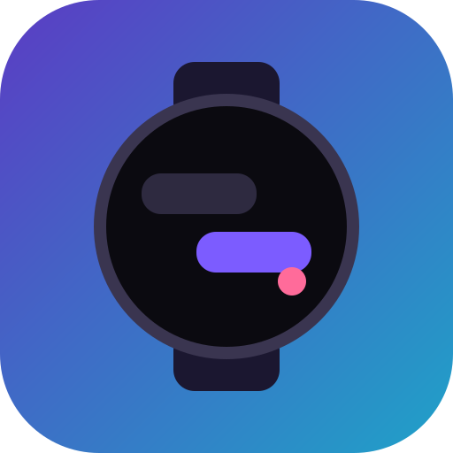

Molly4Watch
Private messaging, right on your wrist ⌚💬
💬 Replies❤️ Reactions👈 Swipe to quote🎨 Your colors🔒 Lock-aware
📲 Add this repo to F-Droid
On your phone, tap the button (F-Droid, Droid-ify or Neo Store), or scan the QR code with the F-Droid app.
➕ Add to F-Droid 🧭 Install guideRepo fingerprint (check it matches in F-Droid):
A1 84 44 1C 30 B1 D5 6B 2B BB 8C 14 76 53 BD C8 EB 1C 8D 37 FA 07 65 25 BA CD 22 CE F9 1E 62 8B🛍️ What you'll find
| 🟣 | Molly (Molly4Watch): Molly with a tiny, signature-protected doorway for the relay. |
| 🔵 | Molly Wear relay: talks to your watch so Molly doesn't have to. Uses Google Play services, so F-Droid flags it as a non-free dependency. |
| 🟡 | The watch app: install once from the GitHub release with adb (F-Droid can't install onto watches). |
🚀 Three steps
- Add the repo above and install Molly (Molly4Watch) and Molly Wear relay.
- Open the relay once. It should say "Molly: connected" ✅
- Put the watch app on your Pixel Watch (see the install guide) and open it. 🥳
⚠️ Unofficial build, signed with its own key, so it can't update the official Molly. Switching means backup → uninstall → install → restore. Not affiliated with or endorsed by the Molly project.